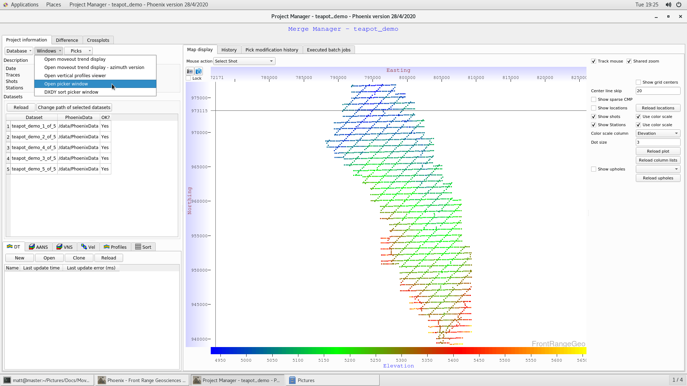
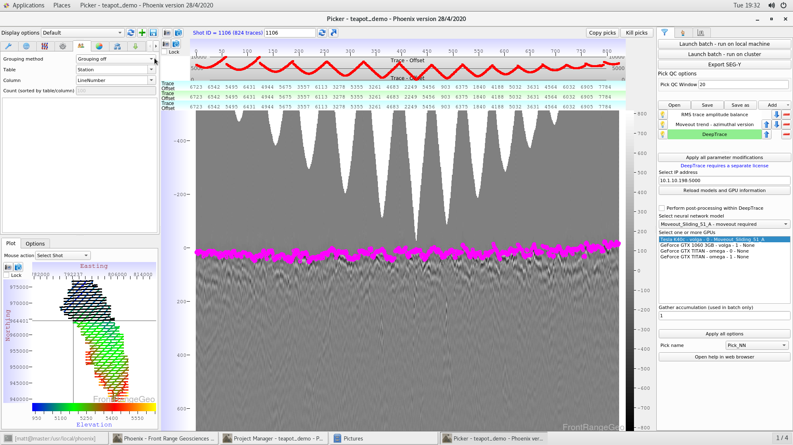
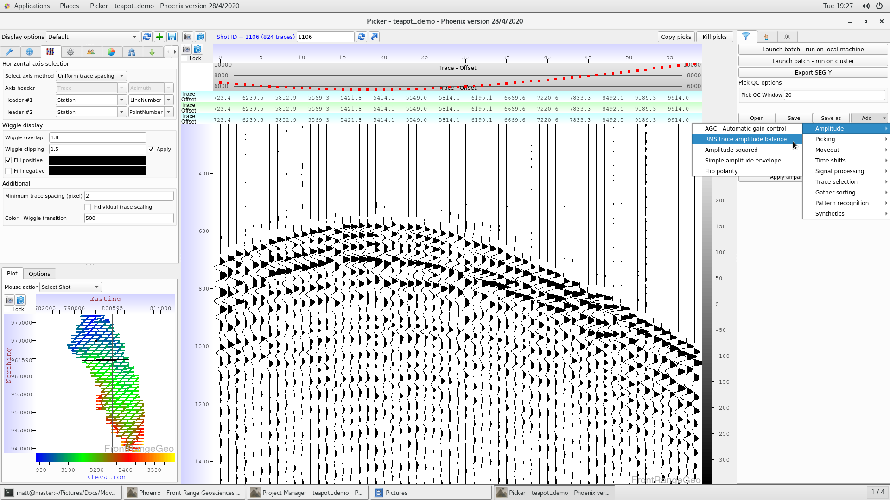
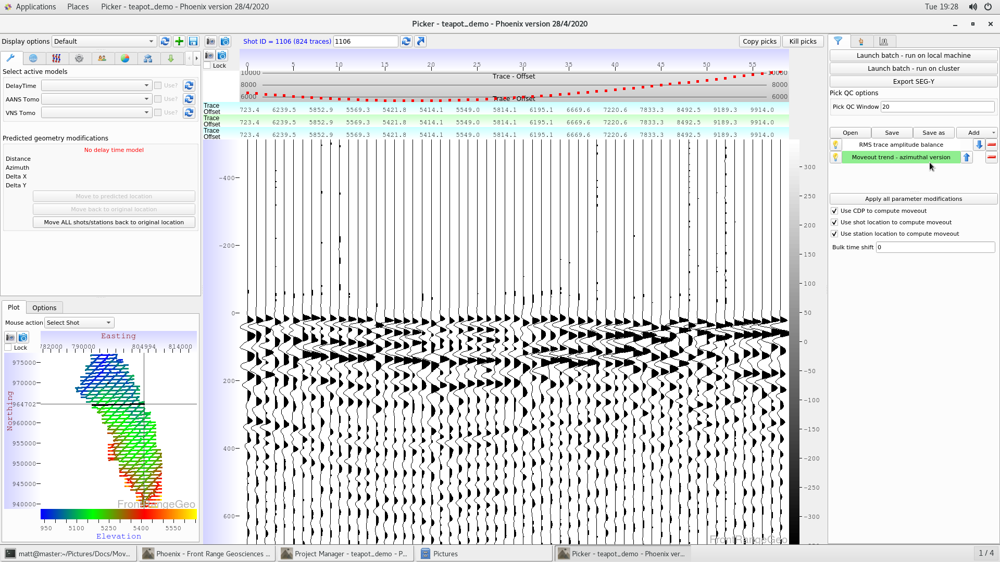
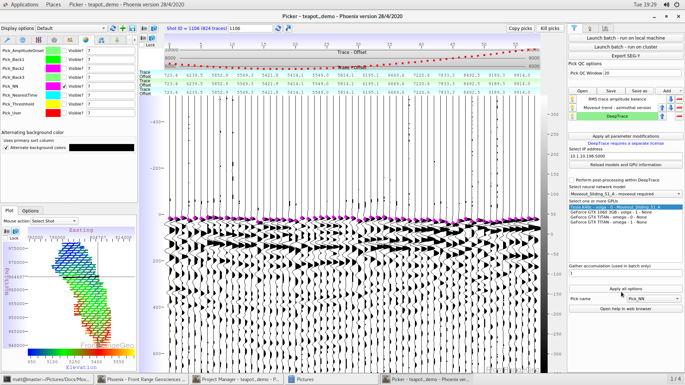
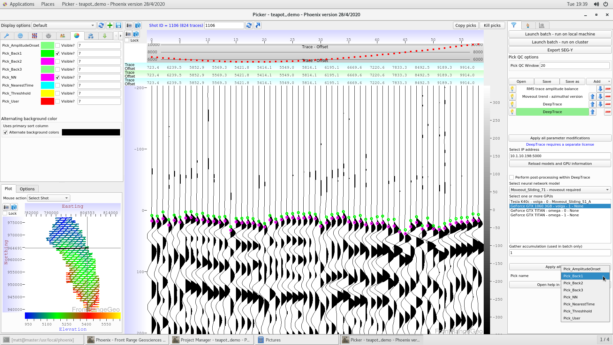
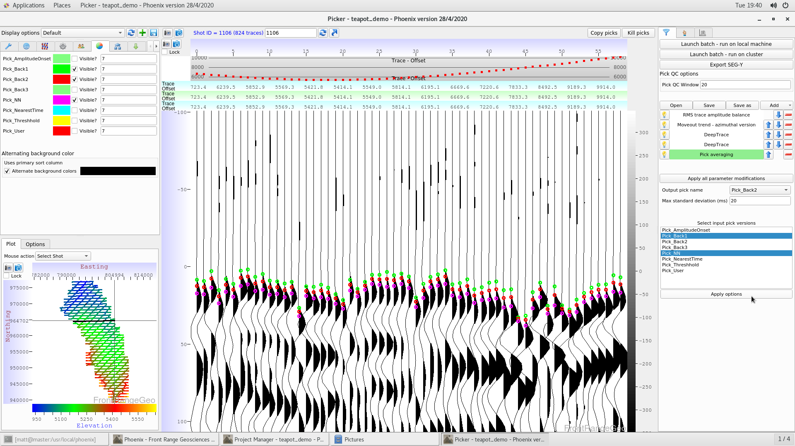
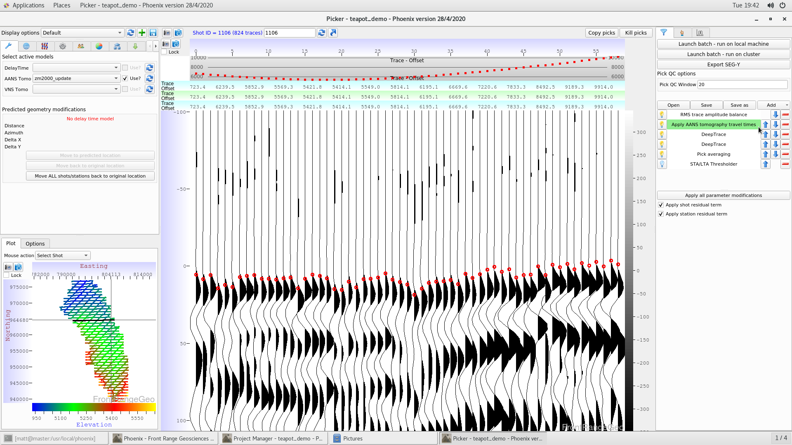
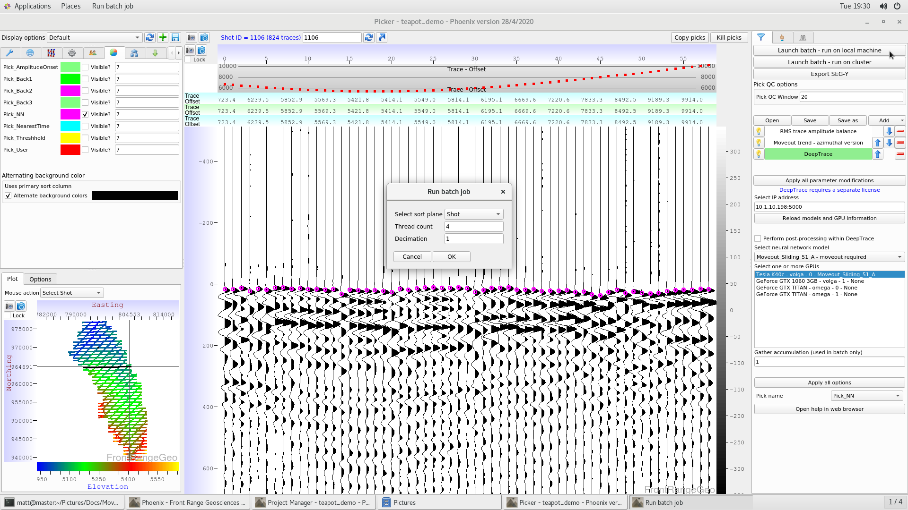
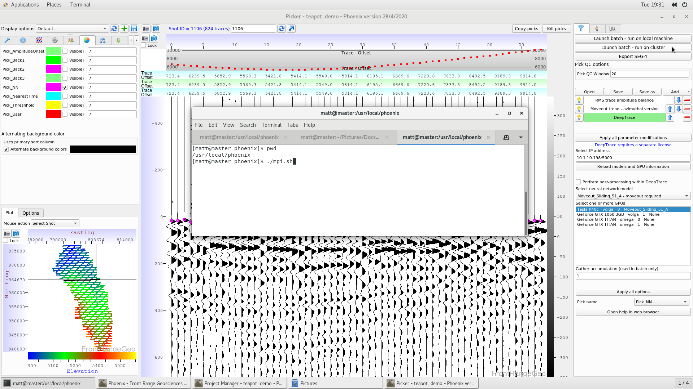

Phoenix includes a fully-featured picking utility for examining and modifying seismic data with various tools, and creating and modifying first break picks.
Users primarily interact with DeepTrace through the picking window.
Users navigate to the Picker window from the merge manager, as shown in this image:

After the picking window is open, access seismic data by clicking at various locations on the basemap at the bottom left. After bringing up seismic data, users should sort the data to more easily view it. Navigate to the “grouping” tab at the top left (icon of two people), and modify the “Grouping method” tab to “Use header value” from “Grouping off”. Then, change the values like so:
| Grouping method | Grouping off \(\rightarrow\) Use header value |
|---|---|
| Table | Station |
| Column | LineNumber |

Now you should see a single receiver line of seismic data on-screen. Choose different receiver lines by cliking on the line numbers underneath the grouping window, or by hitting the space bar.
The primary interaction with the picking window is through the “Flow Builder” on the right side of the screen, which shows a number of processing modules.
First, add an RMS trace balance to ensure your data’s amplitude is reasonably scaled by navigating to “Add” \(\rightarrow\) “Amplitude” \(\rightarrow\) “RMS trace amplitude balance”:

Next, apply the moveout trend you previously created in the flow builder with “Add” \(\rightarrow\) “Moveout” \(\rightarrow\) “Moveout trend - azimuthal version”:

Now that we have flattened the seismic data, we can apply a DeepTrace moveout model with “Add” \(\rightarrow\) “Picking” \(\rightarrow\) “DeepTrace”.
Users will need to change the DeepTrace IP address to their local GPU node IP, and click “Reload models and GPU information”, then select a model from the dropdown menu, and click on an available GPU to apply that model to that GPU. After the model and GPU has been selected, you can change the name of the pick entry it will be saved to (default: Pick_NN). When you are done, click “Apply Options”. Ensure you have that pick column checked in the Color Wheel toolbar at the top left:

If we want, we can add a second DeepTrace flow module, two create another set of picks with a different model:

With two sets of DeepTrace picks available, we can average their picks together (and kill picks with high variance between the sets of DeepTrace picks) by using the Averaging module with “Add” \(\rightarrow\) “Picking” \(\rightarrow\) “Pick averaging”:

We may not trust some of our picks in the noisiest areas of the survey. To automatically kill picks made in high-noise areas, add the “STA/LTA Thresholder” module: “Add” \(\rightarrow\) “Picking” \(\rightarrow\) “STA/LTA Thresholder”
If we have already created a tomographic (ANS or VNS), or delay time model, we can use model-based traveltime calculations to create much more accurate moveouts.
Navigate to the Wrench tab in the picker window, and hit the refresh button next to the kind of model you want to use. In this example we have an ANS model called “zm2000_update” we will use as a moveout trend.
Select the mode, and check the “Use?” checkbox. Finally, add the model-based moveout in the flow builder with “Add” \(\rightarrow\) “Moveout” \(\rightarrow\) “Apply AANS tomography travel times”
(Note: remember to put the ANS travel time module above the DeepTrace modules, and remove the azimuthal moveout trend)

Now that we have our flow built, we want to apply it to the entire survey in a batch.
Batch jobs can be run on the local computer, or over MPI for larger jobs.
To run a local job, select “Launch batch - run on local machine”. A dialog box will pop up asking how many threads to use (for picking with DeepTrace, we recommend about 6 threads/GPU). You can also choose to only pick on every \(n^{\text{th}}\) shot by changing the Decimation parameter (Decimation = 2 means every second shot will be picked).

To run jobs over MPI, choose “Launch batch - run on cluster”. After setting the parameters, click “OK” and open up a command prompt and type:
